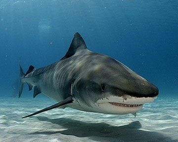
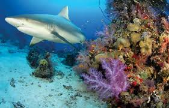
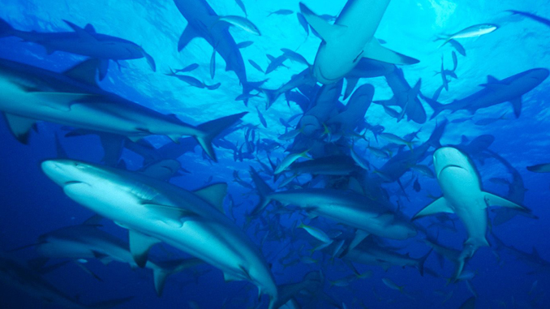
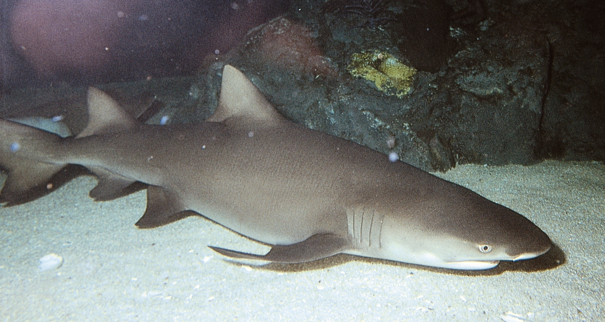
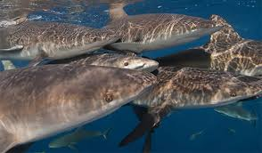
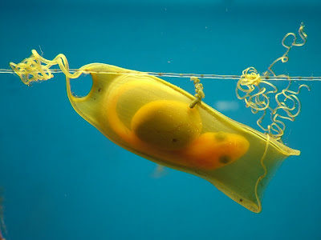
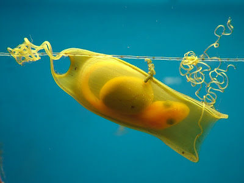

sharks are crucial to the ecosystem It is difficult to estimate population numbers since there are many different species spanning a large geographic area. However, overall shark numbers are on the decline due to the many threats they face in the wild.Sharks have adapted to living in a wide range of aquatic habitats at various temperatures. While some species inhabit shallow, coastal regions, others live in deep waters, on the ocean floor and in the open ocean. Some species, like the bull shark, are even known to swim in salt, fresh and brackish waters.
 Tiger Sharks, Hammerheads and Bull Sharks prefer warmer waters, while the Dogfish, Greenland and Goblin sharks opt for chillier waters. The Mako, Blue, Thresher and Basking sharks are happy in temperate conditions. Certain shark species will remain in a fairly confined habitat for their entire lives. Others, such as the Blacktip and Tiger sharks, may migrate for short distances (up to 1000 miles). Highly pelagic species are capable of travelling across entire oceans. Examples of these include the Blue Shark and the Mako. Migration is generally for the purposes of feeding and breeding. Having to traverse such extensive areas means that those species require special adaptations to allow for the changes in temperature, topography and perhaps even prey.Most sharks live in oceans in the mild or warm parts of Earth. But the Greenland shark lives in the cold Arctic waters. Sand sharks spend most of their time at the bottom of shallow water. The Portuguese shark lives in the deepest parts of the ocean.

for sharks it is very difficult to estimate population numbers since there are many different species spanning a large geographic area. However, overall shark numbers are on the decline due to the many threats they face in the wild.

A huge amout of sharks are especially active in the evening and night when they hunt. Some sharks migrate over great distances to feed and breed. This can take them over entire ocean basins. While some shark species are solitary, others display social behavior at various levels. Hammerhead sharks, for instance, school during mating season around seamounts and islands.Some shark species, like the great white shark, attack and surprise their prey, usually seals and sea lions, from below. Species that dwell on the ocean floor have developed the ability to bottom-feed. Others attack schooling fish in a feeding frenzy, while large sharks like the whale and basking sharks filter feed by swimming through the ocean with their mouths open wide, filtering large quantities of plankton and krill.
  Sharks mature slowly, and reach reproductive age anywhere from 12 to 15 years. This, combined with the fact that many species only give birth to one or two pups at a time, means that sharks have great difficulty recovering after their populations have declined.Soon after birth, sharks pups swim away to fend for themselves. They are born with fully-fledged sets of teeth and are able to feed and live on their own.
 

majority species of shark eat things like fish, crustaceans, mollusks, plankton, krill, marine mammals and other sharks. Sharks also have a very acute sense of smell that allows them to detect blood in the water from miles away.